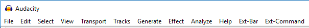

Menu Reference
Many commands in Audacity appear in one of the menus and are documented on the following pages.
Other functions can be found in Toolbars or run by using the appropriate keyboard shortcut listed in Keyboard Shortcut Reference. Shortcuts can be changed or added in Keyboard Preferences.
The Menu bar
- Image of the Menu bar as it appears on Windows

- Click, or hover, on any menu item in the image to read about that menu entry.
| Menu | What you'll find there |
|---|---|
| Audacity (Mac Only) | About Audacity, Preferences, System Services, Show and Hide Audacity and other applications, and Quit. |
| File | Working with Audacity project files and other audio files. |
| Edit | Altering the audio in your project. |
| Select | Making selections of tracks, or within tracks, in your project. |
| View | Change Zoom levels. Show clipping, Undo History, Mixer Board, Toolbars and Karaoke window. |
| Transport | Control recording and playback. |
| Tracks | Adding, aligning and labeling audio tracks. |
| Generate | Creating new audio in your project. Audio generating plug-ins will also appear here. |
| Effect | Processing the audio in your project. External Effects plug-ins will also appear in this menu. |
| Analyze | Analyzing the audio in your project. External plug-ins that act on audio but do not produce audio output will appear here, as well as tools like Silence Finder and spectrograms. |
| Window (Mac Only) | Minimize and zoom windows, choose the project window to bring to the front. |
| Help | Short and full Help; capture Audacity screenshots; download current Audacity; audio device information; show the Log and generate support data; Audacity version number, license and build information. |
The Extended Menu bar
There are two additional menu items that are hidden by default. They can be turned on at or the Interface pane of Preferences.
The Extended Menu bar adds menu access to many less frequently used commands. These are particularly useful to visually-impaired or motion-impaired users, but others may find them useful too.
- Image of the Extended Menu bar as it appears on Windows
- 
- Click, or hover, on either of the Ext- items at the end of the image to read about those menu entries.
| Menu | What you'll find there |
|---|---|
| Ext-Bar | The Ext-Bar menu provides access to Toolbar operations that are not available in the default Audacity menus. These will be of most interest to visually-impaired users or those who have difficulty using the mouse. Shortcuts can be assigned to these commands if required. |
| Ext-Command | The Ext-Command menu provides access to extra commands for track focus and movement of the editing or playback cursor that are not available in the default Audacity menus. These will be of most interest to visually-impaired users or those who have difficulty using the mouse. Shortcuts can be assigned to these commands if required. |
If you only require regular access to a small set of these commands you can set shortcuts for them and leave the extra menus hidden.